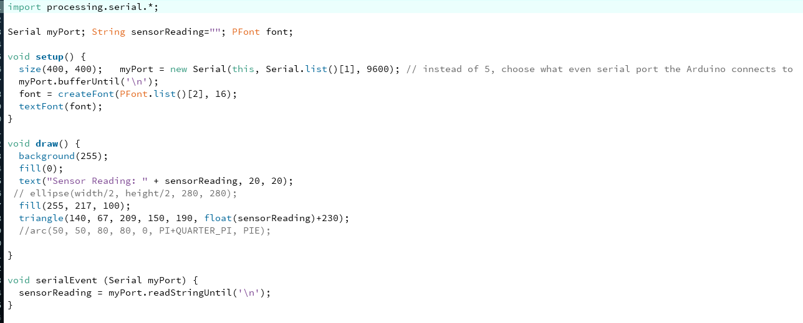
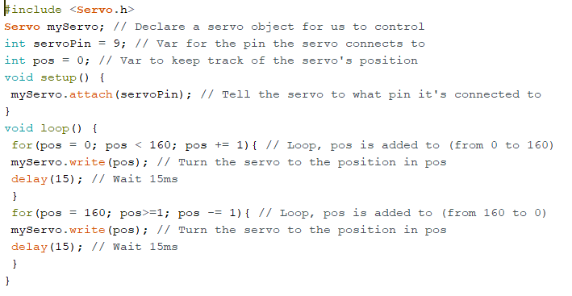

Voordat u start met de hele pagina door te lezen opzoek naar dat wat relevant is voor u,
laat mij helpen! Voor de assigments van Arduino workshop 1 gaat u naar Workshop 1.
Is dat toch niet wat u zoekt, maar wilt u zien hoe ik uit de voeten ben gekomen met de tweede workshop van Arduino? Ga dan naar Workshop 2.
Ik nog een reflectie geschreven die u misschien wel zou willen lezen, ga dan naar mijn reflectie.
Workshop 1 Arduino
Voor de workshop Arduino deel 1 was het belangrijk om de stappen te volgen die verder verteld in de Reader om "wegwijs" te worden met het programma en de hardwaren.
Om de doorlopen stappen inzichtelijk te maken, heb ik screenshots toegevoegd en per uitgevoerde opdracht ook een filmpje toegevoegd.
Exercise 2
2A
2B
2C
2D
Exercise 3
3A
3B
3C
In deze opdracht heb ik gewerkt met mijn Ardruino Uno, een breadboard en ledlampjes om dankzij de hulp van jumper wires(kabels) en de resistor voor de led lampjes kunnen ze los van elkaar knipperen. Ik heb één van de twee ledjes sneller laten knipperen dan de andere.
Het is belangrijk dat in de code, geschreven in het programma van Arduino, de led outputs worden aangegeven en in de void loop beschreven wordt wat ik wil. De void loop is een stuk waarin het gedrag van de led wordt beschreven. Dankzij een delay kan ik er voor kiezen om een led sneller te laten gaan of langzamer. Met de delay kan ikzelf kiezen hoe lang iets mag branden en hoe lang iets pauze heeft en dus uitstaat. In dit geval brand het groene led langer dan de gele led, de gele led knippert twee keer zo snel.
Exercise 4
4A
4B
4C
In het onderstaande filmpje ziet u twee led lampjes branden. Een van de ledjes heeft een fade in, hij gaat langzaam aan en de andere heeft een fade out wat betekend dat die langzaam uit gaat. Wanneer de ene led aangaat, gaat de andere uit en vice versa.
In de code wordt er een zogenoemde for loop gebruikt om dit te kunnen realiseren. Het is belangrijk om de helderheid bij te houden en heeft daarom ook een begin nodig aldus 0. Zo lang de helderheid om de 256 blijft, komt er elke keer een getal bij, de led gaat helderder branden. Dit werkt hetzelfde voor het uitgaan van de led, maar dan omgedraaid. De helderheid start bij 256 en gaat net zo lang door met aftrekken totdat de helderheid 0 is.
Exercise 5
5
Exercise 6
6A
6B
6C
In het onderstaande filmpje ziet u opnieuw twee led lampjes die een fade hebben, zoals opdracht 4, maar nu worden de led lampjes bediend door middel van een draaiknop. Deze draaiknop wordt een potmeter genoemd en deze kan twee kanten opdraaien. Voor de opdracht kan die de led aan of uitzetten, maar dat is afhankelijk van de wensen die ik heb. In dit geval wil ik dat er 1 led aangaat en de andere uit wanneer er aan de potmeter wordt gedraaid.
In de void loop, in de code, wordt er een map functie gebruikt. Deze map functie zorgt ervoor dat de values die ik wil gebruiken voor de led niet daar buiten kunnen gaan. Verder gebruik ik nog in de code een serial.print(“sensor = ”) en serial.println(sensorValue) om te zien in een de monitor wat er gebeurd met mijn waardes. Dit is voor mij zodat ik kan zien of het werkt.
Exercise 7
7
In de onderstaande filmpjes ziet u een uitwerking van led lampen die worden aangestuurd door middel van een LDR (Light Dependent Resistor). Een LDR meet de hoeveelheid licht waarna ik wat kan doen met die waardes; een lampje feller laten branden of juist minder fel.
In het eerste filmpje kunt u zien wat er gebeurt wanneer ik mijn hand boven de LDR houd en hoe de led lampjes daarop reageren. Het tweede filmpje laat zien wat er gebeurt in de serial monitor en met de waardes wanneer mijn hand boven de LDR wordt gehouden.
Exercise 8
8A
In het onderstaande filmpje ziet u het resultaat van Arduino en Processing wat samenwerken. Processing is een programma waarin ook codes geschreven worden, maar waardoor de computer bijvoorbeeld een gezicht kan herkennen. Door een samenwerking tussen Arduino, inputs en outputs waardes, is het mogelijk om in Processing vormen te laten manipuleren. In het fimpje ziet u een triangle die groter of kleiner wordt, dit is afhankelijk van de waardes.
De waardes worden doorgegeven door Arduino naar Processing (ook zichtbaar in het filmpje) en hoe hoger de waarde, hoe groter het figuur en vice versa.

Workshop 2 Arduino
Voor de workshop Arduino deel 2 was het belangrijk om de stappen te volgen die verder verteld in de Reader om "wegwijs" te worden met het programma en de hardwaren.
Om de doorlopen stappen inzichtelijk te maken, heb ik screenshots toegevoegd en per uitgevoerde opdracht ook een filmpje toegevoegd.
Exercise 9
9A
9B
9C
9D
9E
9F
In het filmpje van opdracht 9F ziet u het resultaat van een led lampje dat wordt bediend door buttons. De buttons hebben een HIGH status of een LOW status wat betekend dat bij een HIGH status de button aanstaat en bij LOW uit.
De void loop heeft aan wat de voorwaardes zijn om het led echt te laten branden. De if-statements, dat wat voorwaardes kan controleren, heeft een aantal criteria waaraan gehouden moet worden. Wanneer de buttonPinL (links) of (||) buttonPinR los van elkaar worden ingedrukt is de status HIGH. Wanneer de buttonPinL en (&&) buttonPinR tegelijk worden ingedrukt is de status HIGH. Alles wat daar tussen zit is LOW dus dan staan de led uit.
Waar het dus eigenlijk omdraait is wanneer er niks wordt ingedrukt, gaat de led niet aan, in de andere gevallen wel.
Exercise 10
10A

10B
Het filmpje van opdracht 10B wordt laten zien wat een servo in combinatie van de opdracht kan doen. De servo is een soort motortje wat een draaimechanisme in zich heeft wat ervoor zorgt dat het kan draaien(bewegen).
In de void loop in de code gebruik ik een aantal keer een for loop om de positie van de servo te bepalen. Door dit bij elke for loop anders te doen, ontstaat er een illusie van een “levend” onderdeel. De loops zijn vrijwel identiek aan elkaar, maar de positie waar de servo moet beginnen is in de loop elke keer anders wat ook zorgt voor een andere werking.
Exercise 11
11A
11B
In dit filmpje, voor opdracht 11B, is te zien hoe de servo wordt bediend door twee buttons. Al is de servo in het filmpje tijdens niet stil te krijgen, kan er toch gezien worden dat het daadwerkelijk bediend wordt door de buttons.
In de void loop gebruik ik twee if-statements: één voor elke button. Wanneer de buttonPinR ingedrukt is, krijgt die een HIGH status (aan) en dan zorgt die ervoor dat de servo beweegt. Dit principe wordt ook toegepast bij de buttonPinL, maar dan gaat deze de andere kant op dan wat de buttonPinR heeft gedaan. Zo zorgen de buttons ervoor dat de servo naar links en naar rechts kan, afhankelijk van de button waarop er gedrukt wordt.
Exercise 12
12A
12B
Een waarschuwing voor het komende filmpje van opdracht 12B. Wanneer dit wordt afgespeeld, komt een hoog geluid uit, het geluid van scheldwoorden censuur. Let op hoe hard het geluid van het apparaat staat waar u op kijkt.
Deze opdracht maakt gebruik van een Piezo speaker, een speaker waarmee er tonen kunnen worden afgespeeld. In de void loop wordt er gebruikt gemaakt van de tone() functie die aangeeft welke tonen er worden afgespeeld. In de opdracht heb ik gespeeld met de lengte van de toon van 1000 hertz. Daarnaast heb ik ook gespeeld met de delay tussen de tonen zodat er een korte of langere pauze ontstaat.
12C
12D
Exercise 13
13A
13B
13C
13D
13E
In het onderstaande filmpje, onder de code, wordt de uitwerking van alle code laten zien van opdracht 13E. In het filmpje ziet u hoe de Piezo speaker geluid geeft wanneer er de Accelerometer recht ligt. Het is dus tot een waterpas gemaakt en in plaats van een luchtbubbel in het water komt er nu geluid uit.
Om dit voor elkaar te krijgen, zijn er een aantal libary’s moeten geïnstalleerd zijn zodat de pas gemaakt kan worden. Het is belangrijk dat de accelerometer gekalibreerd is met de ondergrond waarop het ligt. Gebeurt dit niet ontstaat er geen waterpas rechte meting.
The reflection
Het onderwerp Arduino vond ik moeilijk om mijzelf eigen te maken in de workshop lessen, en ik kreeg dit dan ook niet binnen de ingeroosterde tijd af.
Door extra tijd eraan te besteden, is het allemaal af gekomen maar het bleef een opgave.
Ik kon goed begrijpen waarom ik deze opdrachten heb moeten uitvoeren en dat was ook een goede keuze geweest.
Elke opdracht die ik kon afronden, was een overwinning voor mijzelf omdat ik dan daadwerkelijk iets had laten doen. Het was gaaf om te zien dat zelfs ik met code iets kon laten branden.
Mijn verwachtingen van Arduino waren dat ik er moeite mee zou krijgen omdat het te maken had met programmeren.
Ik heb inderdaad moeite gehad met de workshops, maar niet alleen met programmeren. Het solderen had zijn uitdagingen en het ombouwen van het breadboard bracht ook de nodige uitdagingen met zich mee.
Dankzij klasgenoten kon ik soms hulp krijgen als ik er echt niet meer uitkwam en dat was heel prettig. Dit soms ook geen overbodige luxe, maar de overwinning was groter als ik het zelf kon doen.
Ik wil in de toekomst nog wel werken aan Arduino om te zien wat ik kan leren en maken.
Het werken aan Arduino zou ik niet alleen willen doen, ik zou het willen doen met een ander voor de eenvoudige rede dat twee mensen meer zien dan één.
Het moge mij duidelijk zijn dat het niet verstandig is dat grote projecten die geprogrammeerd moeten worden alleen op mijn schouders rusten. Uiteraard zou ik wel willen helpen en mee kijken.
Hoewel ik het moeilijk vond, zijn er wel wat dingen goed gegaan. De opdrachten zijn afgekomen en ik ben weer kennis rijker. Een uitdaging ga ik niet uit de weg en Arduino is zeker een uitdaging voor mij.